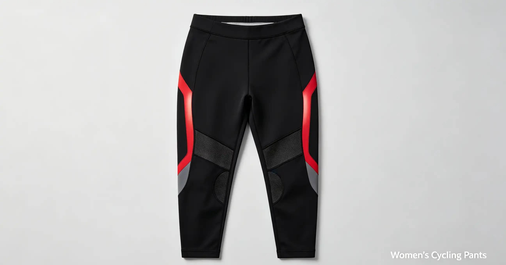

If you commute by bike, a good set of lights is not optional—it is the single most important safety purchase you will make after a helmet. Yet most riders buy either the cheapest light on Amazon or the brightest one they can find, without understanding that lumens alone do not make a light safe or effective. A poorly designed 1,000-lumen light can blind oncoming traffic and still leave the road directly in front of you in shadow. This guide explains what actually matters in a bike light: beam pattern, battery type, mounting systems, and the regulations that separate a toy from a tool. Whether you ride through a well-lit city or a pitch-black country road, you will know exactly what to buy and why.
Frequently Asked Questions
For urban commuting with streetlights, 200-400 lumens is sufficient for being seen. For riding on dark roads, you need 500-800 lumens to see the road ahead. For fast descents (25+ mph) on unlit roads, 1,000+ lumens is recommended. But remember: beam pattern matters more than lumens. A 200-lumen StVZO light will illuminate the road better than a 1,000-lumen round-beam light. Prioritize beam quality over raw brightness.
Lumens: The Number That Misleads Everyone
Lumens measure total light output, not useful light on the road. Many cheap lights advertise 1,000+ lumens but use unregulated LED drivers, poor-quality reflectors, and round beams that waste light into the sky and oncoming drivers' eyes. A well-designed 200-lumen light with a shaped beam puts more usable light on the pavement than a poorly designed 1,000-lumen light. The German StVZO (Straßenverkehrs-Zulassungs-Ordnung) bicycle light standard is the gold standard for beam design. StVZO-compliant lights (from brands like Busch & Müller, Lupine, Supernova, and SON) use shaped reflectors and precision optics to create a beam with a sharp horizontal cutoff, similar to a car's low beam. They are measured in lux, not lumens, because lux measures illuminance—the amount of light actually falling on the road surface. A StVZO light rated at 80 lux will illuminate the road better than a generic 1,000-lumen light. For urban commuting with streetlights, 50-100 lux is sufficient. For unlit roads, you need 80-150 lux. For fast descents on dark roads, 150+ lux is ideal.
Beam Patterns: The Shape of Light Matters
There are three fundamental beam patterns: flood (wide, even spread), spot (narrow, focused beam), and shaped (combination with a cutoff). Flood lights are good for being seen in urban environments but create glare for oncoming traffic. Spot lights are good for seeing far ahead on dark roads but leave the periphery dark. Shaped beams (StVZO) are the best of both worlds: they put light on the road where you need it, with a sharp cutoff that prevents blinding others. The best light for commuting combines a shaped beam front light with a wide-angle rear light. The Exposure Strada MK11 SB ($265) uses a shaped beam with a remote switch and delivers 1,600 lumens with a 36-hour battery life in its lowest mode. For a more budget-friendly option, the Cateye AMPP 800 ($59) uses a modified reflector that creates a wider beam than round lights, though it does not have a true StVZO cutoff. The Lezyne Lite Drive 1000+ ($79) offers a Daytime Flash mode that pulses at 1,000 lumens—highly visible even in bright sunlight. For rear lights, the Garmin Varia RTL515 ($199) combines a 65-lumen taillight with a radar that detects approaching vehicles from up to 153 yards away and alerts you on your Garmin or Wahoo computer.
Battery Types and Runtime: USB-C Is Now Standard
Nearly all modern bike lights use lithium-ion batteries with USB-C charging, which is a welcome upgrade from the micro-USB dark ages. Battery capacity is measured in milliamp-hours (mAh), and runtime depends on both capacity and brightness mode. A 2,000 mAh battery will run a 500-lumen light for about 2-3 hours at full brightness, or 8-10 hours in a low/pulse mode. Key considerations: pass-through charging (the ability to use the light while charging from a power bank) is essential for ultra-distance riding. The Cateye AMPP 1100 ($79) supports pass-through charging. Battery replacement is a concern with sealed units—most budget lights have sealed batteries that render the entire light useless when the battery degrades. The Fenix BC26R ($89) uses a replaceable 21700 lithium-ion battery, which you can swap in seconds. For dynamo-powered lights, the Busch & Müller IQ-X ($129) pairs with a hub dynamo (like the Shimano Alfine DH-S501, $129) to provide unlimited runtime—no charging ever. Dynamo lights are the ultimate solution for daily commuters who do not want to think about batteries.
Bike Light Comparison Table
| Light | Price | Brightness | Battery Life (Max) | Beam Type | Weight | Best For |
|---|---|---|---|---|---|---|
| Cateye AMPP 800 | $59 | 800 lumens | 50 hrs (flash) | Wide flood | 136g | Urban commuting, budget pick |
| Lezyne Lite Drive 1000+ | $79 | 1,000 lumens | 87 hrs (femto) | Wide flood | 162g | Daytime visibility, features |
| Busch & Müller IQ-XS | $89 | 80 lux | N/A (dynamo/battery) | StVZO shaped | 105g | Road safety, no-glare beam |
| Fenix BC26R | $89 | 1,600 lumens | 65 hrs (eco) | Wide flood | 155g | Dark roads, replaceable battery |
| Exposure Strada MK11 | $265 | 1,600 lumens | 36 hrs (low) | Shaped | 175g | Serious commuting, remote switch |
| Garmin Varia RTL515 | $199 | 65 lumens (rear) | 16 hrs (day flash) | Wide-angle | 71g | Rear with radar detection |
Who This Is For (And Who It's Not)
Best for Cateye AMPP 800: Budget-conscious commuters in well-lit urban areas who need a reliable, bright-enough light without spending more than $60. The wide beam is good for being seen, and the 50-hour flash mode is excellent for daytime visibility.
Not ideal for Cateye AMPP 800: Riders on unlit country roads or anyone who rides with oncoming traffic regularly. The beam is not shaped and will create glare for drivers.
Best for Busch & Müller IQ-XS: Commuters who ride on roads with traffic and want a proper, glare-free beam that illuminates the road without blinding others. The StVZO compliance means this light is actually legal as a primary headlight in Germany and meets the highest optical standard.
Not ideal for B&M IQ-XS: Mountain bikers who need a round beam for seeing around tight corners on trails. StVZO beams are designed for road use and have a sharp cutoff that limits peripheral vision above the horizon.
Best for Garmin Varia RTL515: Road cyclists who ride on roads with vehicle traffic and use a compatible Garmin or Wahoo computer. The radar vehicle detection is a genuine safety innovation that gives you a screen alert when cars approach from behind.
StVZO is the German road traffic licensing regulation that includes strict standards for bicycle lights. It requires a shaped beam with a sharp horizontal cutoff (like a car's low beam), a minimum lux value on the road, and a standlight function that keeps the light on when stopped. Even if you do not live in Germany, StVZO-compliant lights are objectively better designed—they put more light on the road and less in other people's eyes. They are the safest choice for road riding anywhere in the world.
Use a steady front light—flashing front lights are illegal in many countries (including Germany, the Netherlands, and parts of the US) because they make it difficult for oncoming drivers to judge your speed and distance. Use a steady or pulse rear light; a flashing rear light is more attention-grabbing during the day but can be disorienting at night. The best compromise is a pulse mode that varies intensity without going completely dark, available on Lezyne and Exposure lights.
The Cygolite Hotrod 50 USB ($35) is the best budget rear light, with 50 lumens, a 270-degree field of view, and a 6-hour battery life. The Bontrager Flare RT ($59) is the best mid-range option, with 90 lumens and ANT+ connectivity that lets it pair with Garmin computers for auto-on/off and brightness control. The Garmin Varia RTL515 ($199) is the premium option, adding radar vehicle detection. A rear light is important even during the day—a 2022 Danish study found that daytime running lights reduced cyclist accidents by 19%.
Most lights come with a rubber strap mount that fits handlebars and seatposts from 22-35mm. These work well for light commuting but can slip on rough roads. For more security, look for lights with a hard mount (like the GoPro-style mounts on Exposure and Lezyne lights) or a bolt-on bracket. The K-Edge Garmin Mount ($49) combines a Garmin computer mount with a GoPro attachment for a light underneath—a clean solution for road bikes. Always check that your light does not interfere with cables or a handlebar bag.
Most lights have quick-release mounts, which makes them convenient to remove—but also easy to steal. Always remove lights when locking your bike. If you forget, some lights have security screws (like the Cateye AMPP series) that require a tool to remove. For dynamo lights, they are permanently bolted to the bike and are much harder to steal. As a rule: if you leave your bike unattended, take your lights with you.
For a daily commuter who rides year-round, yes—absolutely. A dynamo hub (Shimano Alfine DH-S501, $129) plus a front light (Busch & Müller IQ-X, $129) and rear light (B&M Toplight Line Plus, $49) totals about $310 in parts, plus wheel building ($50-$100). The payoff is that you never charge a light again, never forget your lights at home, and the lights work as long as the wheel turns. Dynamo lights also have a standlight capacitor that keeps them lit for 4-5 minutes at stops. The downside is the upfront cost and the slight drag (about 3-5 watts when the light is on, negligible when off).
The Night I Almost Hit a Deer—and What It Taught Me About Lights
In October 2022, I was riding home from a friend's house in rural Wisconsin at 9:30 PM. I had a cheap $25 Amazon light that claimed 800 lumens, mounted on my handlebar. The road was a two-lane county highway with no streetlights, and I was cruising at about 18 mph. Out of the darkness, a deer appeared in the middle of the road no more than 30 feet ahead. I swerved, missed it by inches, and my heart did not stop pounding for the next mile. The problem was not the brightness—the light was bright enough. The problem was the beam pattern. My cheap light threw a round spotlight that created a bright tunnel of light directly ahead but left the sides of the road completely dark. The deer was on the shoulder, invisible in my peripheral vision, until it stepped into the beam. The next week, I bought a Busch & Müller IQ-XS (80 lux, StVZO-compliant) for $89 and a Cygolite Hotrod 50 USB rear light for $35. The shaped beam of the B&M light created a rectangular pool of light on the road with a sharp horizontal cutoff—illuminating the entire road width from shoulder to shoulder without blinding oncoming drivers. I have not had a close call with roadside wildlife since.
Conclusion
Good bike lights are not about maximum lumens—they are about putting the right amount of light in the right place without blinding everyone else on the road. For most commuters, the ideal setup is a StVZO-compliant front light like the Busch & Müller IQ-XS ($89) or a quality wide-beam light like the Cateye AMPP 800 ($59), paired with a bright rear light like the Cygolite Hotrod 50 ($35). Two action items: (1) check your local laws—many jurisdictions require a front white light, rear red reflector, and side reflectors after dark, and some specify minimum lumens or restrict flashing modes; (2) test your lights on your actual commute route at night before relying on them, because what looks bright in your living room may be inadequate on a dark road with potholes.
Sources: Cateye light specifications (cateye.com); Lezyne light specifications (lezyne.com); Busch & Müller product catalog (bumm.de); Exposure Lights specifications (exposurelights.com); Garmin Varia RTL515 product page (garmin.com); Fenix BC26R specifications (fenixlighting.com); StVZO bicycle lighting regulations (German Federal Ministry of Transport); Danish Road Directorate cyclist safety study (2022).